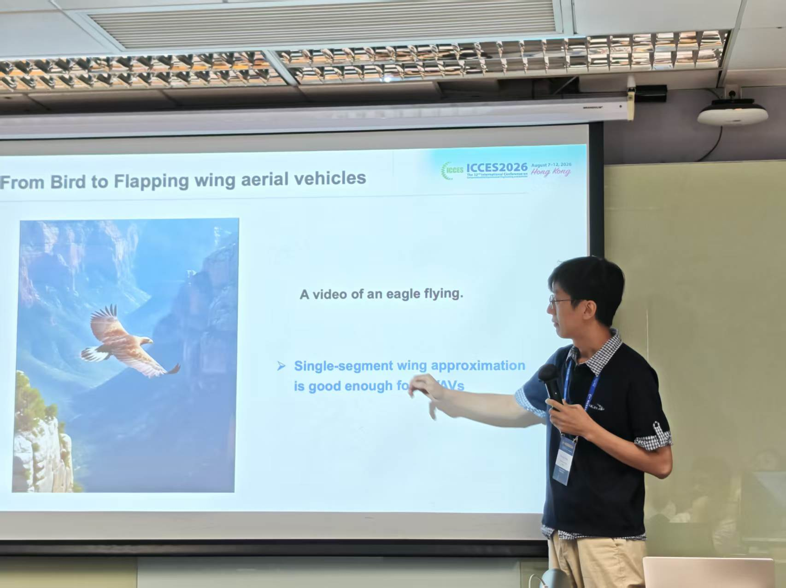
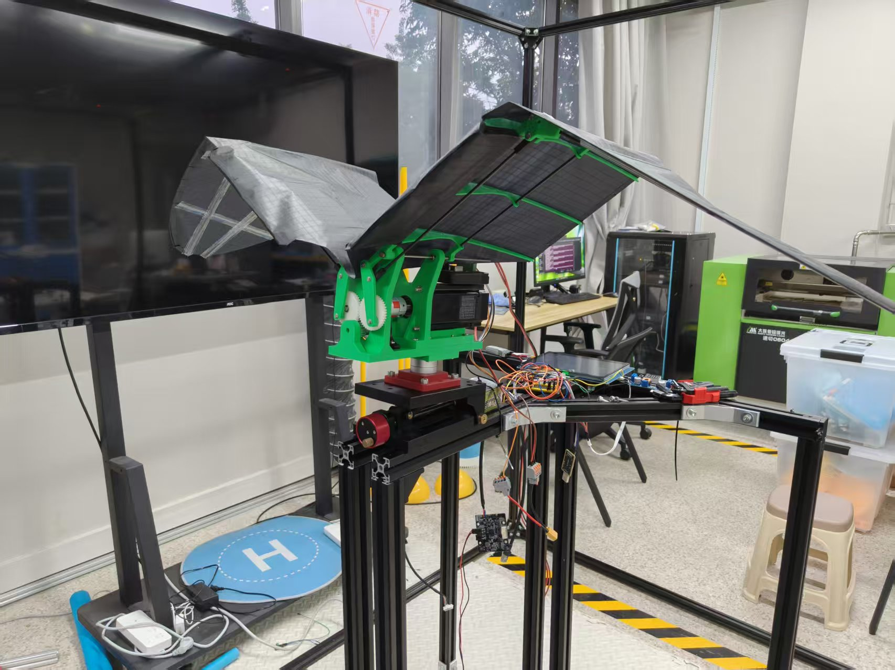
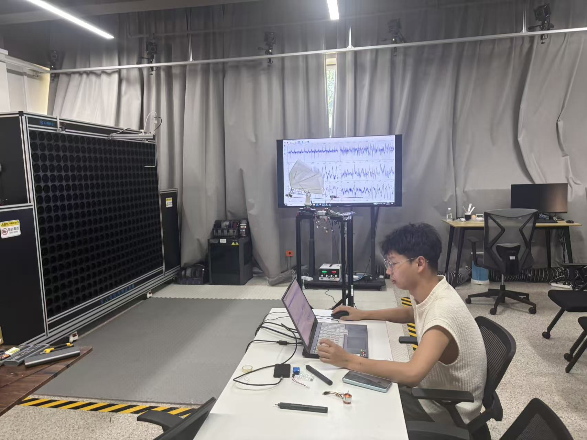
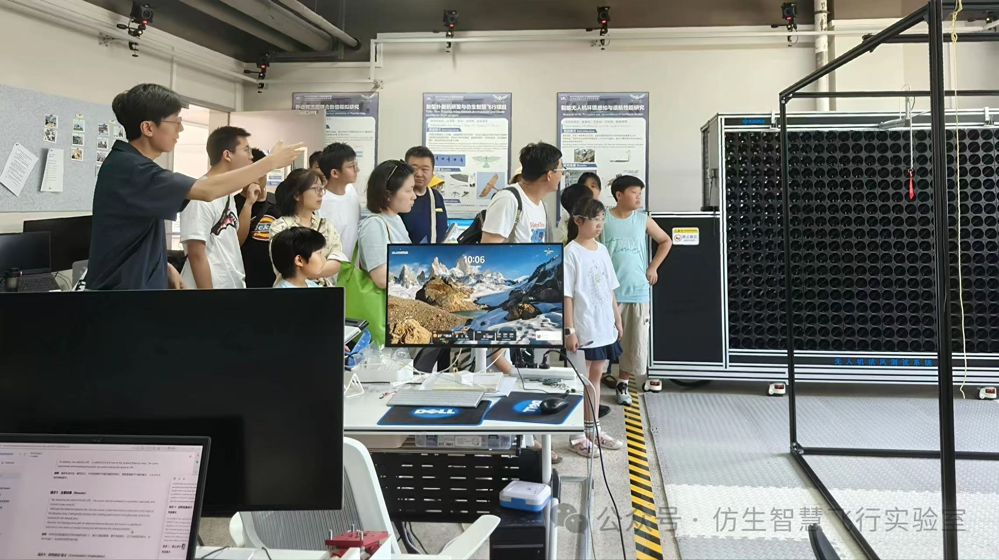

News / 新闻

2026-08-17
陈老师在 ICCES 2026 作邀请报告
陈老师应邀在 ICCES 2026 会议上作邀请报告，介绍课题组在仿生智慧飞行方向的研究工作。
Prof. Song Chen delivered an invited talk at ICCES 2026, presenting the lab's work on bio-inspired intelligent flight.

2026-07-17
扑动试验台搭建完毕
扑动试验台搭建完毕并转入调试。该台架用于扑翼气动力与运动学参数的同步测量，是 K01 气动标定流程的实验基础。
The flapping-wing test rig has been completed and is now in commissioning. It supports simultaneous measurement of aerodynamic forces and kinematics, and is the experimental basis of the K01 calibration pipeline.

2026-07-11
风墙吹风测试成功
风墙装置完成吹风测试，装置运行状态得到验证，为后续扑翼与变体翼实验提供来流条件。
The wind wall rig passed its first blowing test, confirming the facility is ready to supply flow conditions for flapping-wing and morphing-wing experiments.

2026-06-02
实验室开放日举行
实验室举办开放日活动，面向来访者展示研究方向、在研平台与实验条件。
The lab held an open day, introducing its research directions, ongoing platforms and experimental facilities to visitors.